IEEE Robotics and Automation Letters (RA-L), 2026
Learning robust policies for contact-rich manipulation remains challenging due to the difficulty of collecting demonstrations that adequately capture complex contact transitions and recovery behaviors. Existing imitation learning methods often rely on human teleoperation, which is costly, difficult to scale, and provides limited coverage of rare but critical corrective behaviors. We propose a planner-in-the-loop demonstration synthesis framework that autonomously generates long-horizon, contact-rich manipulation trajectories without teleoperation. Our method couples a global contact-implicit planner for high-level task reasoning with a contact-implicit model predictive controller that enforces dynamic feasibility and systematically injects disturbances during execution. This integration not only ensures physical consistency, but also enables controlled shaping of the training data distribution by generating structured recovery behaviors. In real-world experiments, the distilled policies execute from proprioceptive, visual, and tactile observations, without motion tracking required by direct planner execution. Through simulated and real-world experiments on simple maze, spinner, box pushing and rotating, bimanual lifting, balancing, and whole-body manipulation, we demonstrate that the proposed framework produces feasible and diverse datasets that yield policies capable of robust closed-loop contact interaction. Controlled ablations further show that recovery data improves policy robustness while it expands the effectively demonstrated state coverage; once coverage saturates, additional recovery data can displace nominal supervision and degrade performance, underscoring data-distribution design in contact-rich imitation learning.
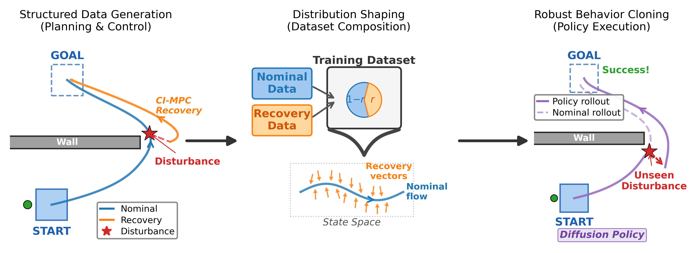
The recovery-data ratio is not itself the governing variable. What matters is whether additional recovery demonstrations expand useful state coverage or merely replace nominal supervision after coverage has saturated.
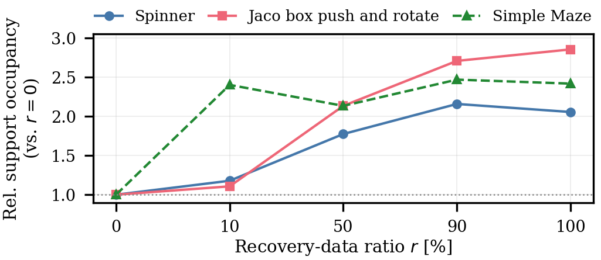
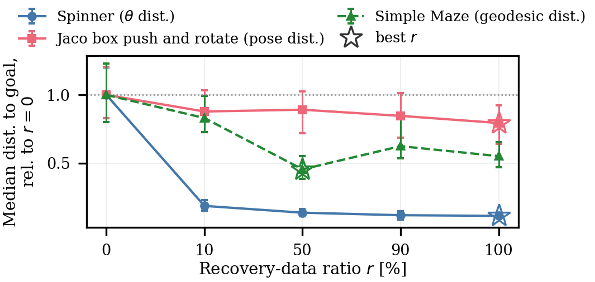
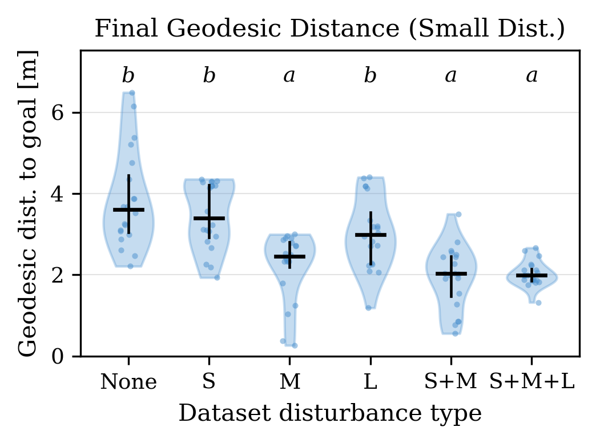
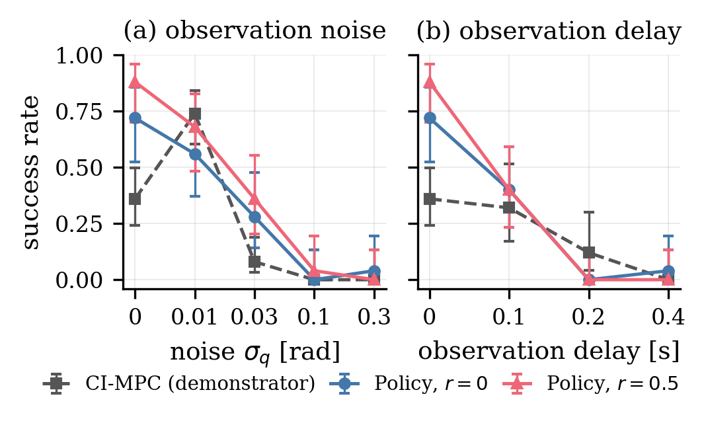
Additional visualizations that did not fit in the paper. Click any figure to open the full-resolution image.
Nominal (gray) and recovery (colored) demonstrations overlaid in task space. Recovery trajectories traverse novel states before rejoining the nominal corridor.
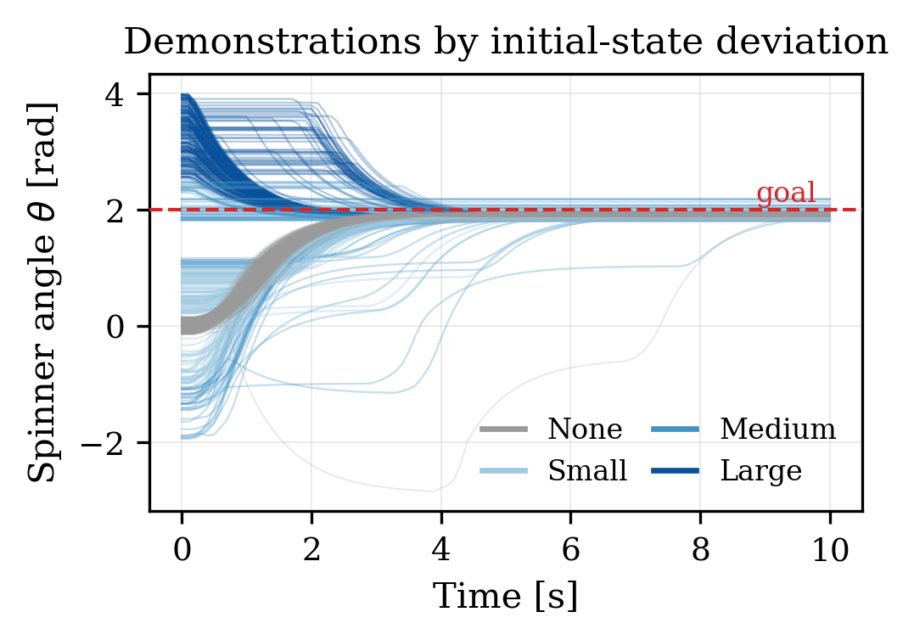
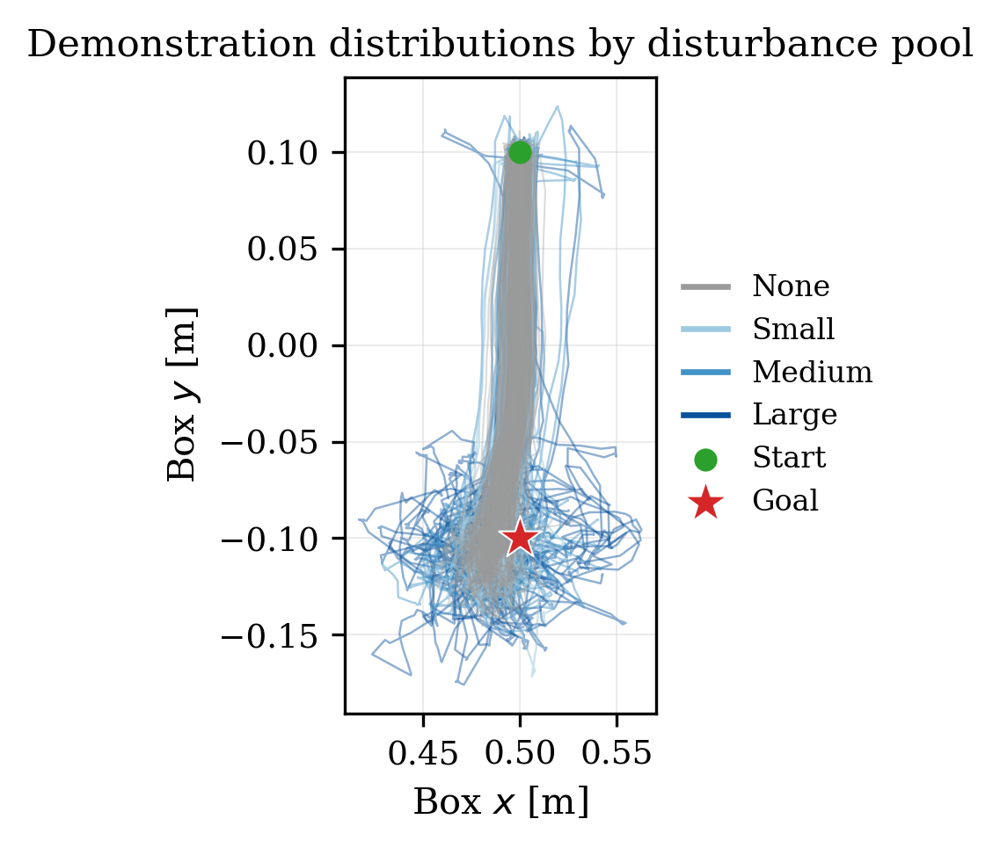
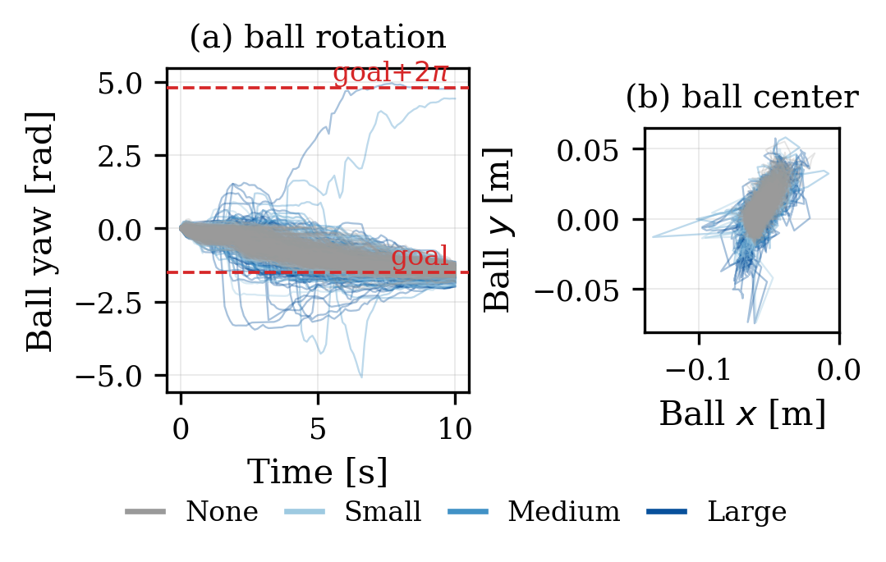
State-space density of the mixed datasets as the recovery ratio r increases from 0% to 100%.
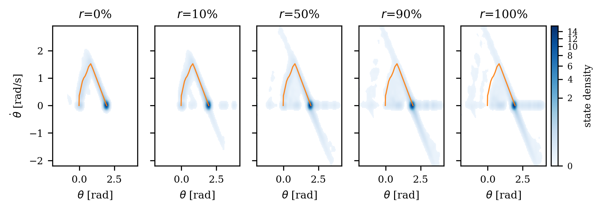
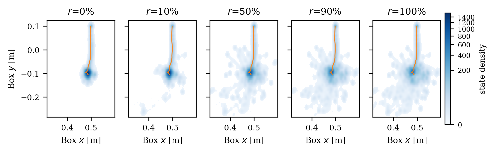
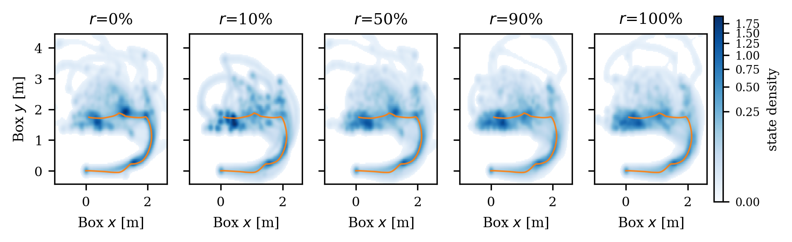
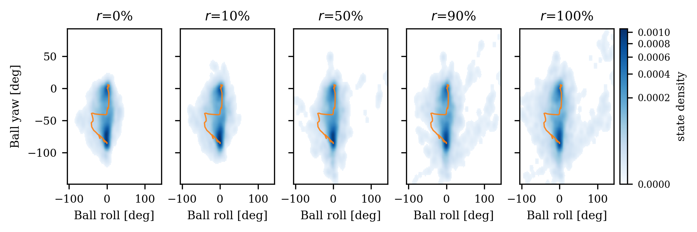
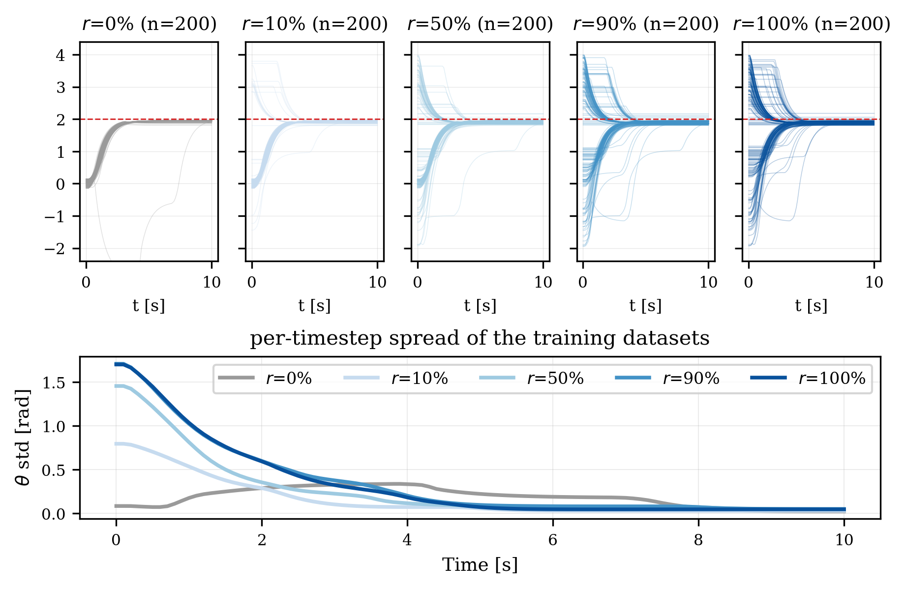
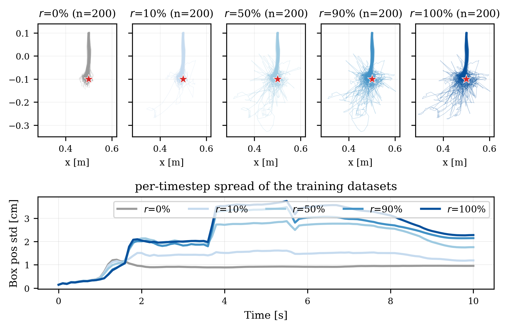
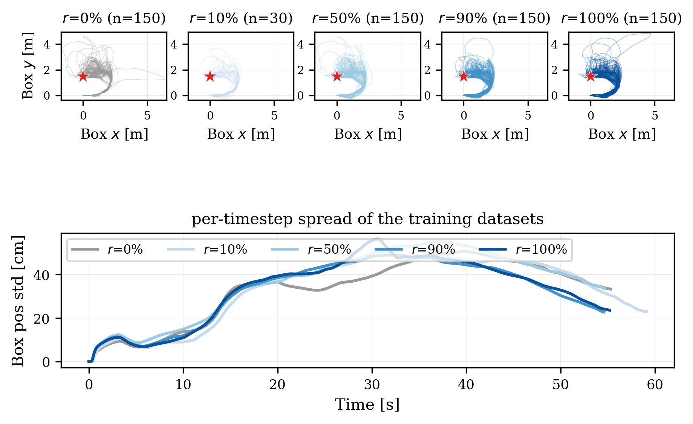
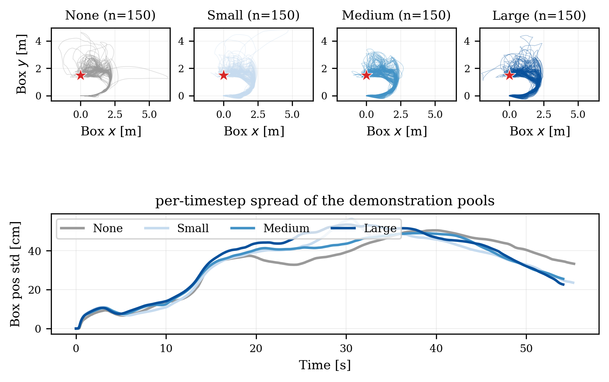
State density of policy rollouts under each evaluation condition; columns are training ratios 0–100%.
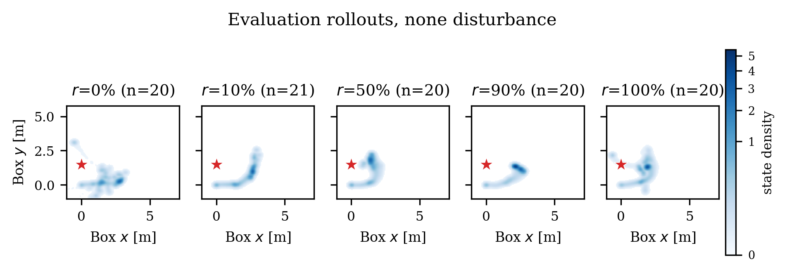
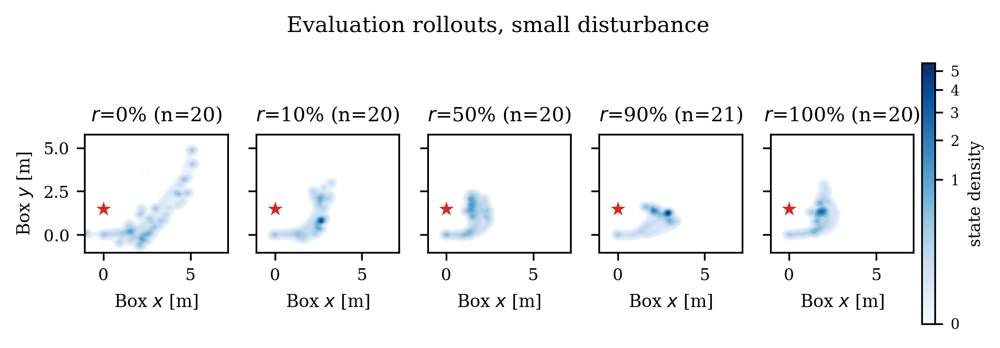
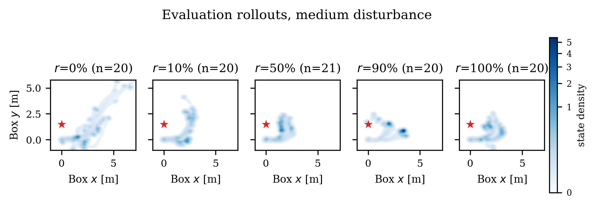
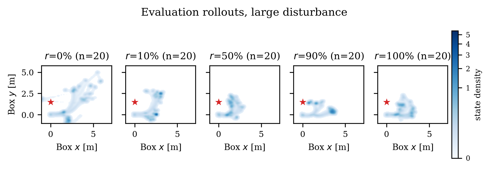
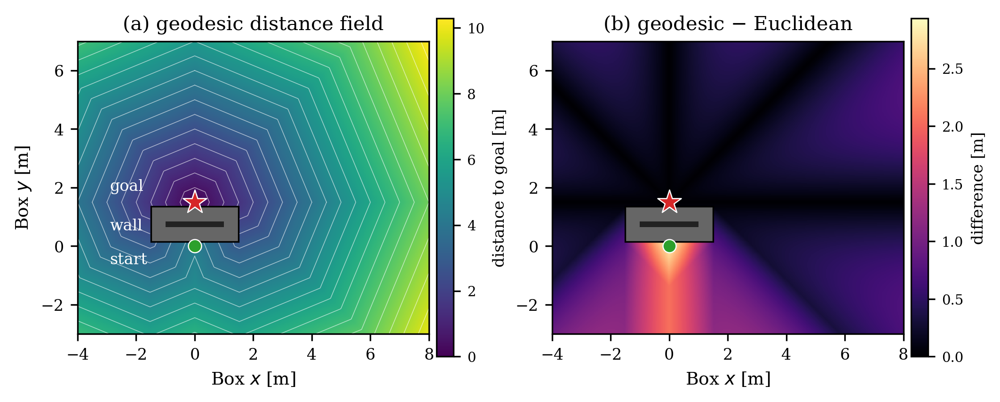
@article{nishiura2026plantoclone,
author = {Nishiura, Manabu and Alspach, Alex and {\"O}nol, Aykut {\"O}zg{\"u}n},
title = {Plan-to-Clone: Planning-Driven Data Distribution Design
for Contact-Rich Manipulation},
journal = {IEEE Robotics and Automation Letters},
year = {2026}
}